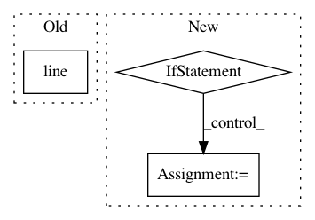

c2cfaf314a381e520883eba2d965cd93fd5572e0,doc/examples/tracking_bootstrap_peaks.py,,,#,21
Before Change
streamlines = Streamlines(peak_streamline_generator)
renderer.clear()
renderer.add(actor.line(streamlines, cmap.line_colors(streamlines)))
window.record(renderer, out_path="closest_peak_dg_CSD.png", size=(600, 600))
After Change
save_trk("tractogram_bootstrap_dg.trk", streamlines, affine, labels.shape)
if have_fury:
r = window.Renderer()
r.add(actor.line(streamlines, colormap.line_colors(streamlines)))
window.record(r, out_path="tractogram_bootstrap_dg.png", size=(800, 800))
if interactive:
window.show(r)
.. figure:: tractogram_bootstrap_dg.png
:align: center
In pattern: SUPERPATTERN
Frequency: 3
Non-data size: 3
Instances
Project Name: nipy/dipy
Commit Name: c2cfaf314a381e520883eba2d965cd93fd5572e0
Time: 2019-07-21
Author: girard.gabriel@gmail.com
File Name: doc/examples/tracking_bootstrap_peaks.py
Class Name:
Method Name:
Project Name: arviz-devs/arviz
Commit Name: 307b810dec9e4a899fb18e16c92bf5671e0fde37
Time: 2019-11-16
Author: ahartikainen@users.noreply.github.com
File Name: arviz/plots/backends/bokeh/bokeh_traceplot.py
Class Name:
Method Name: _plot_chains_bokeh
Project Name: nipy/dipy
Commit Name: aac7b54c8d6957786a9aa70e896cef10fe0ab9fe
Time: 2019-07-21
Author: girard.gabriel@gmail.com
File Name: doc/examples/tracking_pft.py
Class Name:
Method Name: